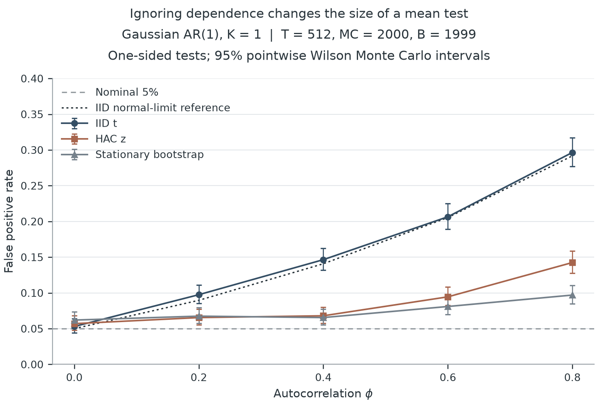
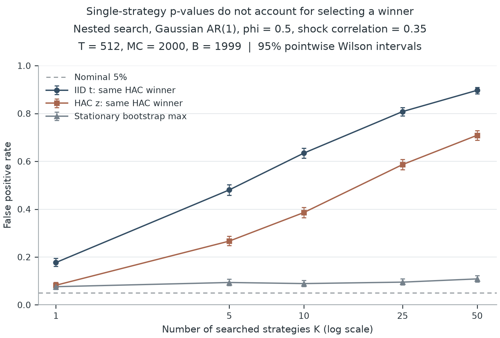
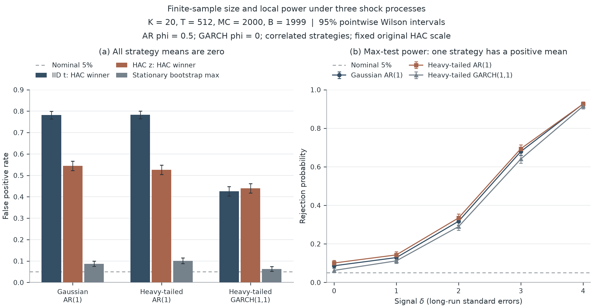

时间依赖与策略筛选
如何影响显著性
第一阶段 · 零均值检验、联合重抽样与有限样本表现
本轮研究检验平均基准调整收益是否大于零。模拟中的均值已知， 因而可以直接比较误报率与检出能力。实现采用固定 HAC 尺度的 stationary-bootstrap max 检验。
每个主实验情形 T = 512，外层重复 2,000 次， 每次 Bootstrap 1,999 次；名义水平 5%。 HAC 滞后 5，期望块长 16，种子 20261002。
三个零均值情形
| 情形 | IID 未调整 | HAC 未调整 | 联合 Bootstrap |
|---|---|---|---|
| 单策略，φ = 0.8 | 29.65% [27.69%, 31.69%] | 14.25% [12.79%, 15.85%] | 9.70% [8.48%, 11.08%] |
| 筛选 50 条，φ = 0.5 | 89.70% [88.29%, 90.96%] | 70.90% [68.87%, 72.85%] | 10.85% [9.56%, 12.29%] |
| GARCH，20 条 | 42.55% [40.40%, 44.73%] | 43.95% [41.79%, 46.13%] | 6.25% [5.27%, 7.40%] |
第一行没有筛选，Bootstrap 为单列检验。其余两行有筛选，联合方法检验提交的候选族。 方括号内为外层拒绝比例的 95% Wilson 区间，不能解释为跨表格的同时保证。
一 · 时间依赖

PDF · SVG · figure-1-dependence.csv
二 · 策略筛选

PDF · SVG · figure-2-selection.csv
三 · 过程与检出能力

PDF · SVG · figure-3-size.csv · figure-3-power.csv
如何理解这些结果
当前默认设置在本轮基准中存在有限样本误报偏差。 第一版用于研究与核对，不能称为已校准的实务检验。
时间依赖调整与候选筛选调整处理不同问题。名义水平是比较基线， 实际误报率由保存的计数估计。联合重抽样的有限样本偏差也需要保留； 三个模拟过程的结果不能推出对所有金融数据都有效。
第一版是现有统计方法的实现与模拟研究，不声明原创定理， 不包含历史交易实证。对真实策略还需核实数据时间、成本、完整搜索记录和样本外评价。
复现与记录
strategy-inference reproduce --profile full --output results/full --seed 20261002
本轮运行用时 300.2 秒。
计算版本：ae92d19b4a7d25767e880543cf65582e85a02f79。环境版本、协议、计数与文件哈希见
运行记录；预先指定的块长敏感性见
附表，未用于挑选主图参数。